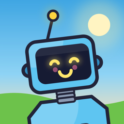

WOBBLY BOT
Write to us and a person reads it. Most answers are below.
Yazdığınızı bir insan okuyor. Yanıtların çoğu aşağıda.

Please include your device model, your iOS or Android version, and the level you were in (for example “Level 10 · Conveyor Belt”). A report that names the exact level is the one that gets fixed fastest. Replies usually come within a few days.
Lütfen cihaz modelinizi, iOS ya da Android sürümünüzü ve hangi seviyede olduğunuzu yazın (örneğin “Seviye 10 · Yürüyen Bant”). Seviyeyi tam olarak belirten bildirimler en hızlı düzelenler oluyor. Yanıtlar genellikle birkaç gün içinde geliyor.
Each button moves one leg. Hold LEFT and the left leg swings forward, hold RIGHT for the right one, and alternate in a steady rhythm. Press both together and let go to jump. The training level walks you through it step by step.
On your device. There is no account and no sign-in, so progress does not travel between devices, and deleting the app deletes it. Reinstalling does not bring it back. Reset progress in Settings starts over on purpose.
Tap the globe in the top right of the main menu, or open Settings › Language. Seven languages are supported: English, Turkish, German, French, Spanish, Italian and Portuguese.
When you fall or the Scrapper catches you, a life lets you carry on from where you were. When you have none left, you can watch a short ad to earn a new one, or simply restart the level: lives are never needed to play.
A light body is nimble but gets blown around by strong gusts. In the garage, try a heavier body or shorter legs, or just stop and wait for the gust to pass.
It opens once you finish level 3. The regions keep changing as you go, and your best distance is saved on the level map.
Rewarded ads depend on what the ad network has to serve at that moment. If nothing is available, wait a little and try again. Nothing an ad gives is required to finish the game.
Her tuş bir bacağı oynatır. SOL’u basılı tutunca sol bacak öne atılır, SAĞ’ı basılı tutunca sağ bacak; ikisini düzenli bir ritimle sırayla basın. İki tuşa birden basıp bırakınca zıplarsınız. Antrenman seviyesi bunu adım adım öğretiyor.
Cihazınızda. Hesap ve giriş sistemi yok, dolayısıyla ilerleme cihazlar arasında taşınmıyor ve uygulamayı silmek ilerlemeyi de siliyor. Yeniden kurmak geri getirmez. Baştan başlamak isterseniz Ayarlar’daki İlerlemeyi sıfırla’yı kullanın.
Ana menünün sağ üstündeki küre simgesine dokunun ya da Ayarlar › Dil’i açın. Yedi dil destekleniyor: Türkçe, İngilizce, Almanca, Fransızca, İspanyolca, İtalyanca ve Portekizce.
Düştüğünüzde ya da Hurdacı yakaladığında bir can harcayıp kaldığınız yerden devam edebilirsiniz. Canınız kalmadıysa kısa bir reklam izleyerek yenisini kazanabilir ya da seviyeyi baştan başlatabilirsiniz: oynamak için can zorunlu değil.
Hafif gövde çeviktir ama sert rüzgârda savrulur. Garajda daha ağır bir gövde ya da daha kısa bacaklar deneyin; ya da durun, rüzgârın geçmesini bekleyin.
3. seviyeyi bitirince açılıyor. İlerledikçe bölgeler değişiyor; en uzun mesafeniz seviye haritasında saklanıyor.
Ödüllü reklamlar, reklam ağının o an sunabildiğine bağlı. Hiçbir şey yoksa biraz bekleyip tekrar deneyin. Reklamların verdiği hiçbir şey oyunu bitirmek için zorunlu değil.
The game has no accounts and never asks for your name or e-mail address. The full policy is on its own page.
Oyunda hesap yok; adınız ya da e-posta adresiniz hiçbir zaman istenmiyor. Politikanın tamamı kendi sayfasında.